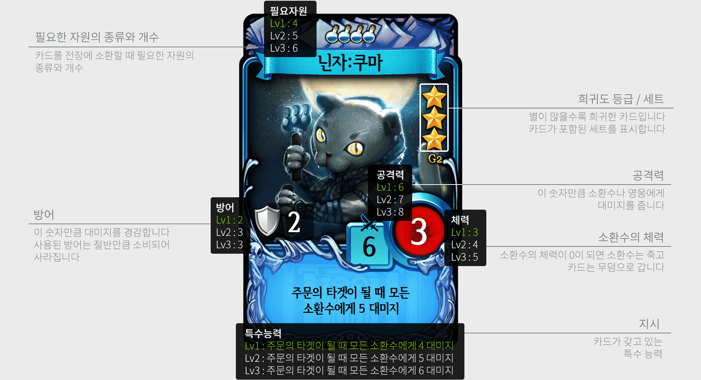
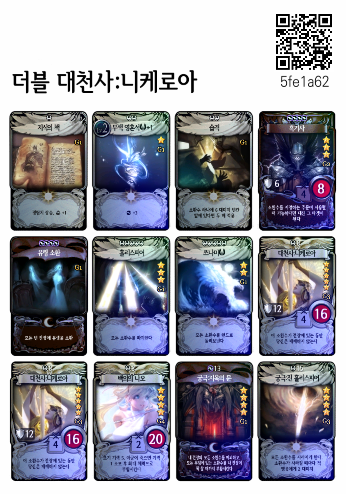

모바일 TCG 마비노기 듀얼에는 다섯 종류의 자원이 있다. 자원은 각각 골드, 마나, 빛, 어둠, 자연이라 불린다.
카드들은 자원에 따라 구분된다. 예를 들어, 다음 카드를 보면 맨 위에 파란색 병 모양의 아이콘이 있는데, 이는 이 카드를 사용하려면 마나를 요구함을 뜻한다.

게임을 진행하려면 이 카드들을 12장 이하로 모아 하나의 덱(deck)을 구성해야 한다. 이때, 각 덱은 최대 세 종류의 자원을 섞어서 구성할 수 있다.
12장 이하의 카드들이 요구하는 자원의 목록이 주어질 때, 이 카드들이 올바른 덱을 구성하는지 아닌지 판단하는 프로그램을 작성하여라.
첫 줄에 카드의 수 N이 주어진다. N은 1 이상 12 이하이다.
다음 N개의 줄에 걸쳐 gold(골드), mana(마나), light(빛), dark(어둠), nature(자연) 중 하나의 문자열이 주어진다. 이는 각 카드가 요구하는 자원을 뜻한다.
주어진 카드들이 올바른 덱을 구성한다면 valid를, 아니라면 invalid를 출력한다.
12 gold gold gold gold gold gold gold gold gold gold gold gold
valid
단일 자원으로 구성된 덱은 올바른 덱이다.
12 light light light light nature mana mana nature mana mana mana nature
valid
세 종류의 자원으로 구성된 덱은 올바른 덱이다.
5 gold mana light dark nature
invalid
다섯 종류의 자원으로는 덱을 구성할 수 없다.
12 light light light dark dark light light light light light dark light
valid

양심이 없는 덱이더라도 올바른 덱이다.
모든 숨겨진 입력 데이터에 대해 정답이면 만점을 주고, 하나라도 틀리면 점수를 주지 않는다.